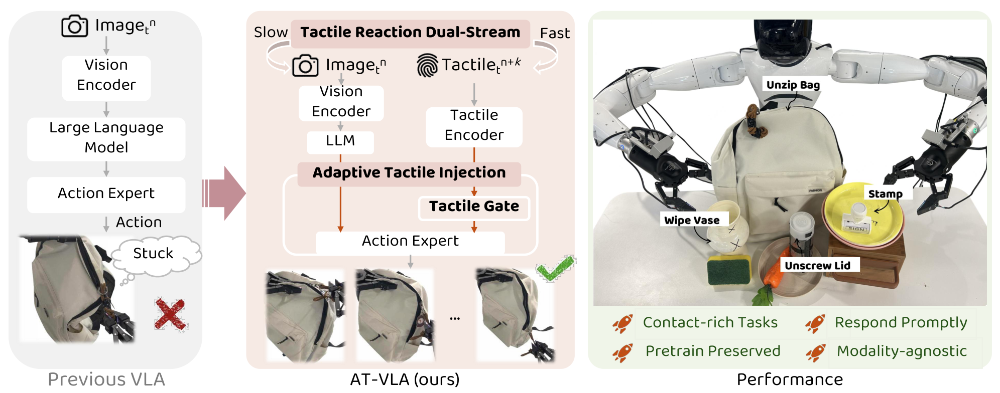
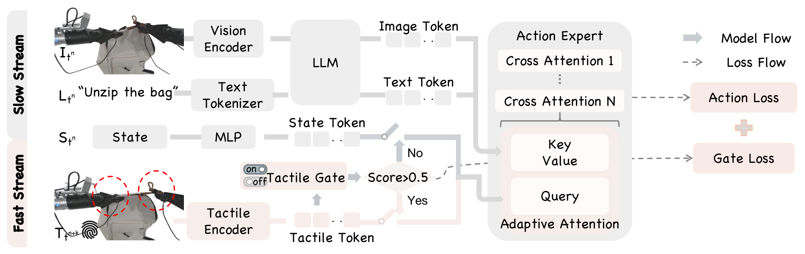
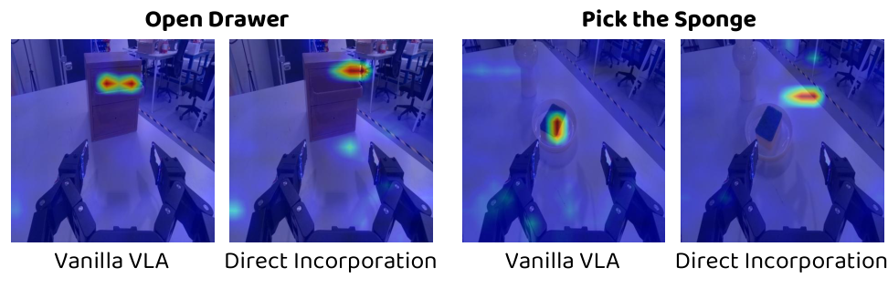
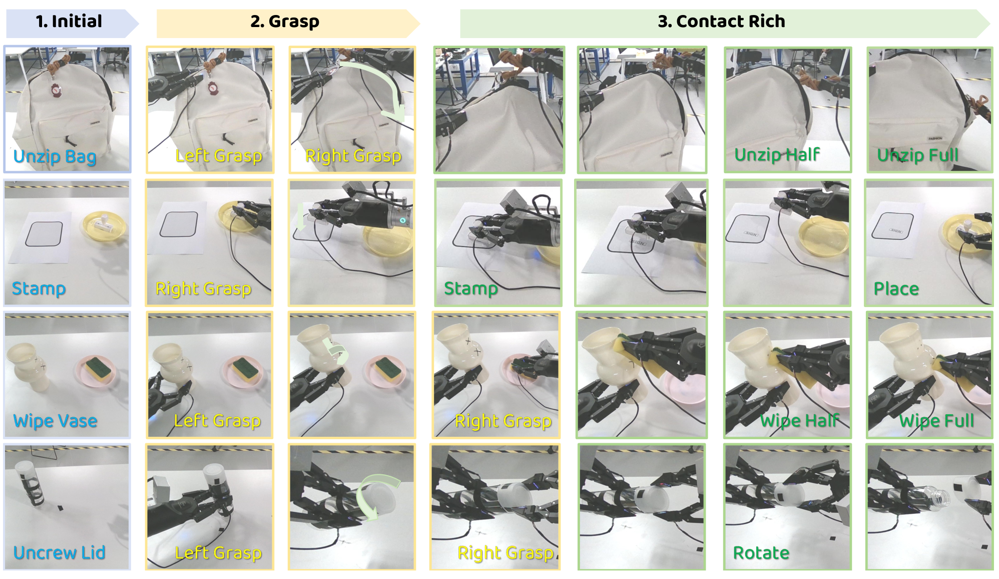

FIG. 1
为什么有了视觉，还需要触觉？
视觉告诉机器人目标在哪，触觉告诉机器人接触后发生了什么。关键还在于反馈能否及时改变动作。

AT-VLA 为已有视觉—语言—动作模型增加一个接触开关：未接触时沿用原有条件输入；接触后，用最新触觉驱动动作专家，并复用较慢更新的视觉语言特征。创新重点是新模态的接入方式与更新时序。
阅读依据：用户提供的 2605.07308v2.pdf，全篇 11 页（正文 8 页、参考文献 3 页），4 图、3 表。已核对 arXiv 官方版本信息。以预印本身份解读，不推定已被会议或期刊接收；未运行作者代码或复现实验。原始 PDF 不随网页公开上传。正文中的结论、阅读推断和待核实问题分别标注。
拉拉链、擦曲面、盖章时，机器人需要感知卡住、接触和滑动。但把触觉始终塞进预训练 VLA，可能连原本的目标定位与抓取都做不好；每次又都经过大模型，则来不及纠偏。作者用接触门控 + 交叉注意力查询切换 + 触觉快慢双流共同处理这两个问题。
视觉告诉机器人目标在哪，触觉告诉机器人接触后发生了什么。关键还在于反馈能否及时改变动作。

这不是简单拼接更多输入；它改变动作专家“拿什么信息去查询视觉语言上下文”。

注意力热图说明可能发生了关注位置偏移；成功率消融才是更直接的任务证据。

图像序列展示操作阶段，统计结果则说明这些操作并非每次都成功。

以下数值直接抄录表 1 Overall，未将人工预设抓取姿态的触觉基线混入完整任务表。百分数由原文小数乘以 100。
| 方法 | 拉拉链 | 盖章并放回 | 擦花瓶 | 旋瓶盖 |
|---|---|---|---|---|
| GO-1 | 20% | 13% | 7% | 27% |
| π0.5 | 0% | 20% | 33% | 46% |
| AT-VLA | 33% | 46% | 67% | 53% |
按表中已四舍五入数值计算：AT-VLA 四任务均值约 49.75%，GO-1 约 16.75%，π0.5 约 24.75%。这是本页计算，不能与表 3 的 GO-1 均值 22% 混用。GO-1 与 π0.5 均未使用触觉，因此这个对比同时包含输入信息和方法变化，不能将所有收益归功于网络结构。
公平性边界：VTLA/RDP 只训练接触阶段，测试由人把机器人摆到理想抓取姿态。作者复现 VTLA 时采用 DexVLA 代码底座；不能把它视为官方实现的完全等价评测。对触觉策略的比较更适合说明各自条件下的接触能力。
| 方法 | 拿放 | 开抽屉 | 盖章 | 原表平均 |
|---|---|---|---|---|
| GO-1 | 1.00 | 0.93 | 0.13 | 0.68 |
| π0.5 | 1.00 | 0.93 | 0.20 | 0.70 |
| AT-VLA 无触觉 | 1.00 | 0.93 | 0.20 | 0.70 |
| AT-VLA 有触觉 | 1.00 | 0.93 | 0.46 | 0.79 |
AT-VLA 两行使用同一组权重，只改变推理时是否提供触觉。这支持“在所测三个任务中，缺触觉时性能可退回接近视觉基线”；盖章仍从 0.46 降到 0.20，不能理解为触觉有无都一样。没有随机失联、噪声、漂移或失效恢复的系统测试，也没有证明所有任务均可安全退化。
| 实验 | 输入方式 | 拉链 / 盖章 / 擦瓶 / 旋盖 | 平均 |
|---|---|---|---|
| Ex0 | 原始 VLA，无触觉 | 0.20 / 0.33 / 0.07 / 0.27 | 0.22 |
| Ex1 | 6D 力，全阶段触觉 Q | 0.07 / 0.13 / 0.07 / 0.20 | 0.13 |
| Ex2 | 6D 力，门控 + 查询切换；同步更新 | 0.27 / 0.40 / 0.53 / 0.33 | 0.39 |
| Ex3 | 6D 力，完整 AT-VLA | 0.33 / 0.46 / 0.67 / 0.53 | 0.50 |
| Ex4 → Ex5 | 2D 标记位移：直接接入 → 完整方法 | 各任务见原文表 3 | 0.05 → 0.32 |
| Ex6 → Ex7 | 触觉图像：直接接入 → 完整方法 | 各任务见原文表 3 | 0.02 → 0.40 |
按原表均值计算：Ex1→Ex2 提升 26 个百分点；Ex2→Ex3 再提高 11 个百分点。消融支持按阶段接入与双流更新的作用，但门控和查询切换一起加入，不能独立估计两者各自贡献。原文所写的“提升 11%”在这里指绝对成功率差，应讲为 11 个百分点。
数据一致性问题 1：表 1 GO-1 盖章为 0.13，表 3 Ex0 为 0.33；论文没有解释是否来自不同批次。两表不能拼成一组统一基线。
问题 2：§4.4.2 正文说“6D 力 > 2D 标记 > 触觉图像”，但表 3 完整方法是 0.50 > 0.40（图像）> 0.32（标记）。本页按表格报数，不替作者推断哪一处写错。
问题 3：§4.1 说每任务 15 次测试，表 1 却有 0.90；0.90 不是 1/15 的整数倍，且盖章列出现 0.90→0.87。缺少原始计数时，不把这些小数反推为确定的成功次数。
作者在摘要与正文把 0.04 s 描述为推理速度及闭环反应，但未给出详细的推理硬件、延迟分布、传感器采集与通信延迟、动作下发与执行等待的逐项测量。其倒数是 25 次/秒，这是算术换算；它不能直接证明机器人端到端控制率恒为 25 Hz，更不能证明最坏情况反应时间只有 40 ms。
推理时的 3:1 是快慢流更新次数比例。论文描述慢流推理一次后快流连续三次，且快流复用旧视觉特征；不能仅凭 40 ms 推得慢流绝对频率。大幅场景变化、接触突变和视觉特征过期对稳定性的影响尚缺专门实验。
阅读判断：有价值的 VLA 适配与控制架构组合。快慢系统和触觉门控本身已有相关工作，本文价值更在特定接口与时序设计的组合；“首次”仍是作者声明，本次未作穷尽优先权检索。
6D Force：原文定义为“3D 切向力向量 + 3D 法向力向量”。这里不要自动解释成常见的 Fx/Fy/Fz/Mx/My/Mz 六维力—力矩。传感器如何聚合、坐标系如何定义、左右夹爪如何拼接与归一化，需要实现细节确认。
动作与训练：论文称输出双臂 14 维末端动作块；动作编码、姿态参数化、H 的具体值、训练超参数、数据划分以及可复用权重仍需核实。已有公式足以说明思想，但不足以保证直接复现。
资源状态：PDF 提供作者项目页。本次访问被引向 Google 登录页，未据此确认代码、数据或权重可公开下载，也不能把“项目页链接存在”写成“已开源”。
以下是迁移推断，不是本文实验证据。最值得借鉴的是将“高层理解”和“快速反馈”分开，并明确传感信号什么时候应进入控制器。
对翼面应变或 TENG 信号，门控条件未必是接触，更可能是拍翼相位、异常载荷或信号可信度；先验证信号是否能区分状态，再做反馈，最后检验飞行或操作指标。本文桌面接触任务的 40 ms 不能直接当成扑翼控制可接受延迟。
可以借鉴它的证据链：同一平台和任务下比较无传感、始终融合、事件门控、快慢更新，并加入传感失效测试。
这篇文章研究如何让已经预训练的视觉语言动作模型真正利用触觉反馈。作者发现，直接加入触觉未必有益，因为模型原本依赖视觉来接近和抓取目标，新的输入方式可能破坏这一步；而等大型模型完整推理一遍，又难以及时响应接触变化。
所以他们设计了两个配合的机制。第一，用接触门判断当前是否需要触觉：未接触时使用自身状态作为注意力查询，接触时切换成触觉查询，视觉语言仍提供上下文。第二，接触阶段让轻量触觉流更快更新，并复用慢流的视觉语言特征，减少每次动作更新对大模型重新推理的依赖。
真机实验里，完整模型在四项接触任务的平均成功率约为一半，消融显示门控与快慢更新都有帮助。价值在于一种实用的传感融合与控制接口设计；但样本量小、部分表格不一致，40 毫秒也缺完整延迟链测量。因此我会把它定位为有启发的真机概念验证，距离稳定通用部署还有明显距离。